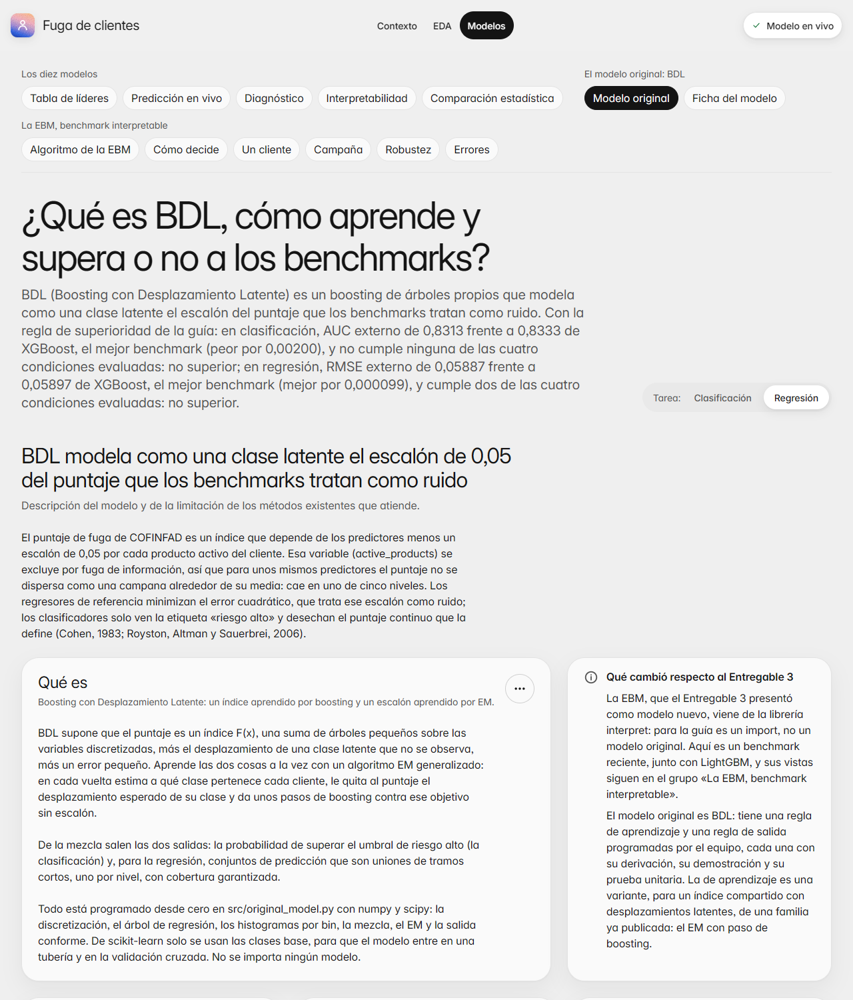
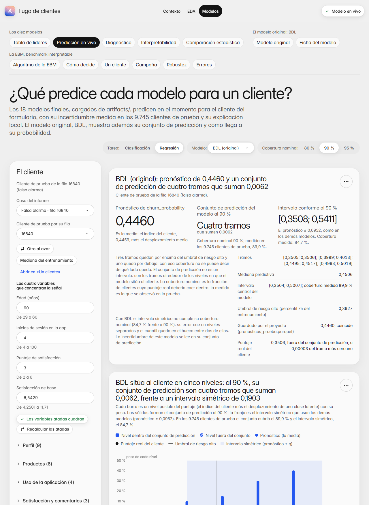
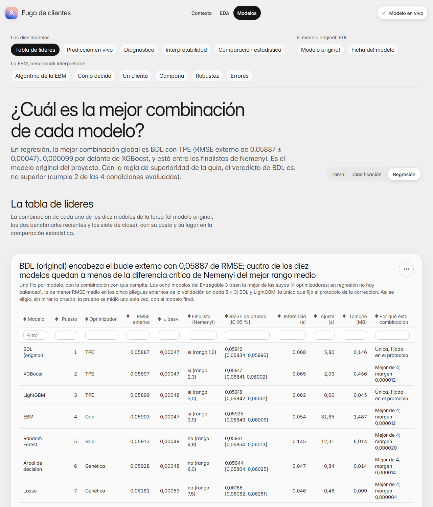

8. Dashboard y despliegue#
URL pública: https://fuga-de-clientes-dash.onrender.com (Render, plan gratuito: si estuvo inactivo, la primera
carga tarda cerca de un minuto). El código está en
Dashboard/ y su guía de
uso en Dashboard/README.md.
8.1. Arquitectura#
Aplicación Dash multipágina (use_pages=True), con una página por sección y la interfaz, la lógica de datos y los
artefactos separados (Tabla 8.1).
Tabla 8.1. Arquitectura del dashboard: piezas, archivos y función de cada una.
Pieza |
Archivo |
Qué hace |
|---|---|---|
Punto de entrada |
|
Crea la aplicación, expone |
Páginas |
|
Las tres secciones de la guía |
Vistas de Modelos |
|
Tabla de líderes, predicción en vivo, diagnóstico, interpretabilidad, comparación estadística, modelo original, ficha del modelo y las vistas de la EBM |
Modelo original |
|
Copia exacta de |
Modelos en vivo |
|
Carga los artefactos una sola vez, predice, calcula la incertidumbre y la explicación local |
Datos |
|
Tablas ya calculadas; el dashboard nunca entrena ni optimiza. |
Artefactos |
|
|
Preparación |
|
Arman los datos y los artefactos a partir de los resultados; el último añade el modelo original y se relanza cuando hay resultados nuevos |
Sistema visual |
|
Componentes, paleta y tipografía únicos |
Pruebas |
|
Corren en cada push con GitHub Actions |
8.2. Las tres secciones#
Contexto: el problema con una cifra citada [Gallo, 2014], por qué importa, la pregunta y los objetivos, la formulación, los datos con su diccionario, el diagrama del flujo de datos y modelos, la búsqueda con dos fidelidades, las limitaciones y los sesgos, las conclusiones, los autores, la versión y la fecha.
EDA: filtros globales que actualizan todas las figuras, el objetivo y su balance, distribuciones, explorador bivariado, correlaciones, faltantes y atípicos, y la escalera de
active_products; cada figura con su interpretación.Modelos: tabla de líderes ordenable y filtrable, predicción en vivo con validación de entradas, probabilidad o intervalo, incertidumbre con su cobertura y explicación local; diagnóstico; interpretabilidad global; comparación estadística con el modelo original incluido; la subsección del modelo original (descripción, formulación, pseudocódigo, proposiciones, diferencias con la literatura, curva de convergencia, techo del problema, pruebas de hipótesis con p ajustados y tamaño del efecto, robustez y veredicto); y la ficha del modelo. Las vistas de la EBM se conservan en un grupo aparte, rotuladas como benchmark.
La sección Modelos tiene trece vistas en tres grupos: cinco para los diez modelos, dos para el modelo original y seis
para la EBM. Las tres capturas que siguen muestran las que más importan para esta corrección: la subsección del modelo
original (Figura 8.1), la predicción en vivo (Figura 8.2) y la
tabla de líderes (Figura 8.3). Se toman con ProyectoFinal/capturar_dash.py del dashboard en
ejecución, con los mismos datos del libro.


Figura 13 Figura 8.1. Subsección del modelo original en el dashboard (Modelos › Modelo original). Interpretación: la página abre con la respuesta a las tres preguntas de la guía (qué es el modelo, cómo aprende y si supera o no a los benchmarks) y con el veredicto calculado a partir de los archivos de resultados; debajo siguen la formulación, el pseudocódigo, las proposiciones, las pruebas de hipótesis y la robustez.#


Figura 14 Figura 8.2. Predicción en vivo con el modelo original para un cliente de prueba: pronóstico del puntaje, conjunto de predicción e intervalo simétrico, con su cobertura medida en prueba. Interpretación: el conjunto de predicción no es un intervalo, sino una unión de tramos cortos, uno por nivel del escalón; el intervalo simétrico del mismo cliente, que es lo que pueden dar los demás modelos, es mucho más ancho.#


Figura 15 Figura 8.3. Tabla de líderes de la regresión con los diez modelos: combinación, métrica en los pliegues externos, pertenencia a los finalistas de Nemenyi, métrica en prueba con su intervalo de confianza, costo y motivo de la combinación. Interpretación: la tabla se puede ordenar y filtrar por cualquier columna; la de finalistas dice qué modelos no se distinguen del mejor rango medio con la prueba de Nemenyi, es decir, entre cuáles las diferencias son demasiado pequeñas para separarlos con esa prueba.#
8.3. Decisiones de diseño#
El dashboard no entrena. Carga tuberías ya ajustadas y las evalúa; cada artefacto guarda sus versiones, su semilla, sus hiperparámetros, el esquema de entrada y sus métricas, y pasó la prueba de ida y vuelta (las predicciones del modelo cargado son idénticas a las del modelo en memoria).
Toda cifra sale de un archivo y cada tarjeta dice de cuál. Ninguna se escribe a mano.
El veredicto se calcula, no se redacta. La subsección del modelo original lee las condiciones de la guía del archivo de resultados y dice «superior» o «no superior» según se cumplan.
Memoria y tiempo. El servidor gratuito tiene 512 MB y una fracción de CPU: los modelos se cargan una vez al arrancar y se guardan en caché; el modelo original solo necesita
numpy,scipyyscikit-learn, y con profundidad 1 predice consultando una tabla por variable.Accesibilidad y diseño. Una paleta limitada, contraste suficiente, nada depende solo del color, navegación fija y diseño adaptable a teléfono y tableta.
Sistema visual propio en lugar de
dash-bootstrap-components. La guía (§7.4) propone esa librería para lograr un diseño coherente. El dashboard ya tenía, desde el Entregable 3, un sistema propio que cumple lo mismo que la guía busca con ella:assets/estilos.cssdefine la paleta (cinco colores para las series de las figuras), la tipografía, el espaciado y la rejilla adaptable;tokens.pylos lee, para que el código no repita ningún color;ui.pyreúne los componentes (tarjetas, avisos, controles, tablas y los estilos comunes de las figuras de Plotly); y la parte estática deverificar_estilo.py, que corre con las pruebas en cada push, comprueba que las páginas no usen colores ni estilos fuera de ese sistema. Los mensajes de error y de validación usan el componente de aviso propio en lugar dedbc.Alert. Cambiar de librería a estas alturas habría obligado a rehacer las trece vistas sin ganar nada de lo que pide el criterio.Cifras que el dashboard vuelve a calcular. Las métricas de cada modelo salen de los mismos archivos que las del libro. Los intervalos de confianza en prueba de la tabla de líderes los calcula la preparación del dashboard con su propio remuestreo, y el costo de los ocho modelos del Entregable 3 es el que quedó guardado con sus artefactos: por eso pueden diferir en la última cifra de los de las tablas 6.5 y 6.6, que se midieron de nuevo para los diez modelos. El desempate de la campaña también es distinto, y se explica en la Tabla 6.11.
8.4. Ficha del modelo y declaración de los datos#
Dashboard/MODEL_CARD.md
(uso previsto, datos de entrenamiento, métricas, limitaciones, riesgos y usos no recomendados), accesible desde la
propia aplicación, y
Dashboard/DATA_STATEMENT.md.
8.5. Guía de despliegue#
El repositorio trae
render.yamlen la raíz, conrootDir: Dashboard,buildCommand: pip install -r requirements.txt,startCommand: gunicorn app:servery la versión de Python fijada.En Render: New → Blueprint, elegir el repositorio y confirmar. Cada push a
mainque cambieDashboard/vuelve a desplegar.Para ejecutarlo en local:
pip install -r Dashboard/requirements.txtypython Dashboard/app.py(http://127.0.0.1:8060).Integración continua:
.github/workflows/dashboard.ymly.github/workflows/modelo_original.ymlinstalan las dependencias exactas y ejecutanpytesten cada push.